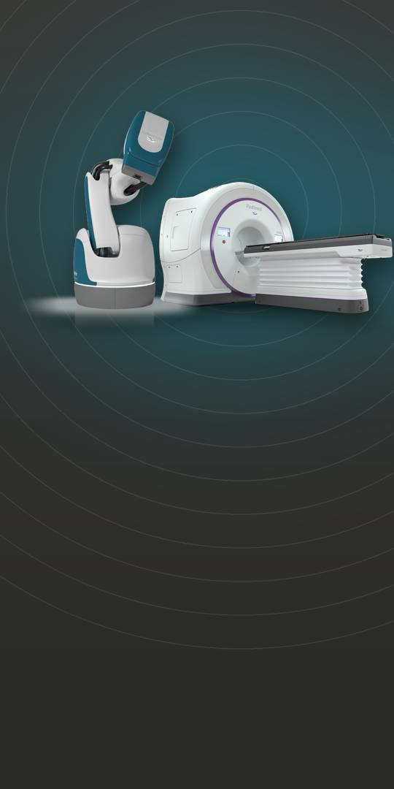
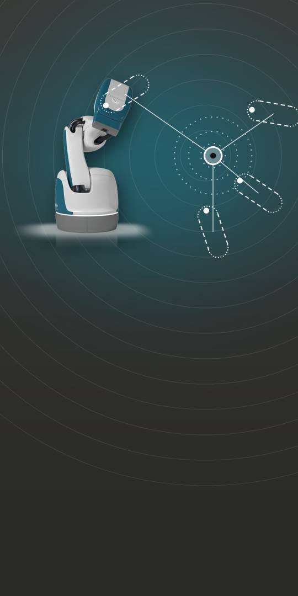
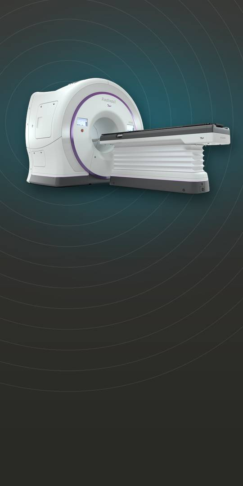

CyberKnife delivers radiation from a robotic arm; the helical Radixact delivers it from a rotating ring.

A compact linear accelerator rides the arm. The company says Synchrony tracking is designed to adapt treatment to targets that move.

Radixact pairs a linear accelerator with CT imaging in a ring gantry. ClearRT imaging is the company’s helical kVCT.
Cash $40.6M against $182.0M of debt principal. The TCW preferred stock sale is signed, not closed.
Forward-looking statements, incl. whether the TCW preferred stock sale closes and dilutes holders, a reverse split and regaining the Nasdaq $1.00 minimum bid, debt covenants, China and tariffs. A material weakness in internal control is reported. Year ended Jun 30, 2026, per the 10-K; backlog is a company measure. Not an offer. See SEC filings.